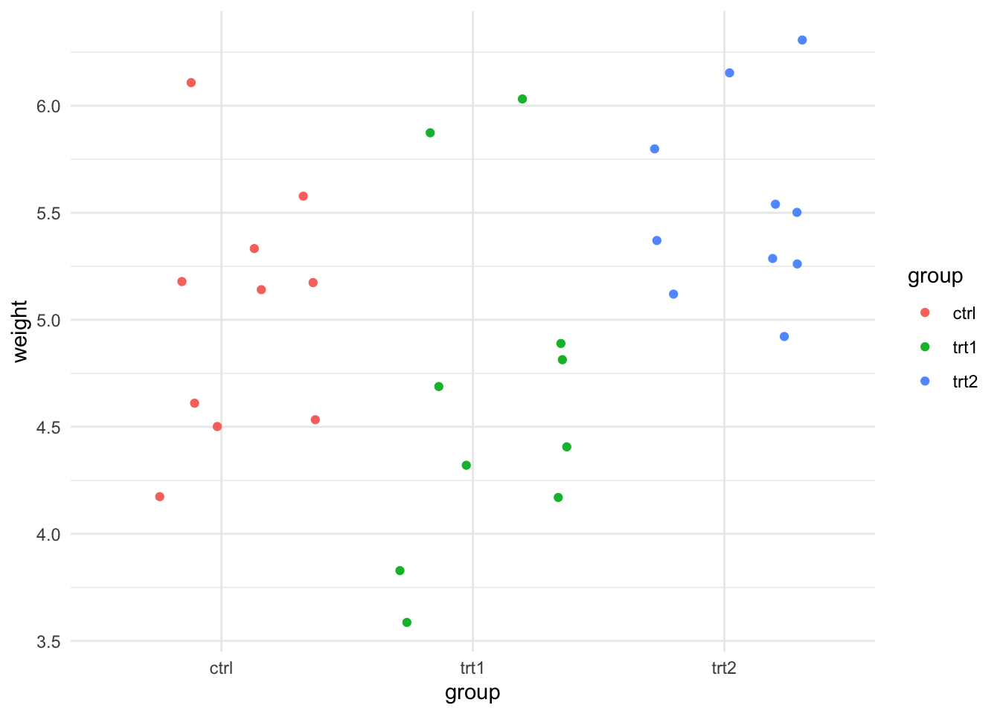
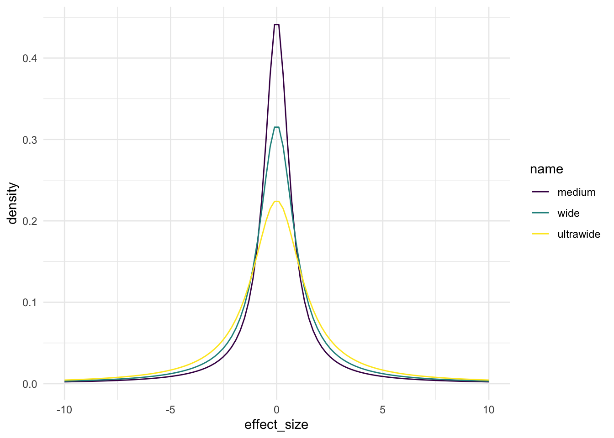

Topic 5 Bayes Factor \(t\)-tests
In this section we’ll look at how we can do a \(t\)-test-like two sample comparison with Bayes Factors. The process is surprisingly straight forward but does need us to pay attention to the weaknesses of the Bayes method - specifically choosing the prior probability distribution. To actually do the tests we’ll use the ttestBF() in the BayesFactor package.
5.1 A Frequentist \(t\)-test
To begin we’ll first do a normal \(t\)-test with a sample data set as a basis for later comparison
5.1.1 The Plant Growth data set
You may recall the Plant Growth data set we used in the Linear Models course, here’s a reminder
## weight group
## Min. :3.590 ctrl:10
## 1st Qu.:4.550 trt1:10
## Median :5.155 trt2:10
## Mean :5.073
## 3rd Qu.:5.530
## Max. :6.310
We will use this as an example data set, specifically we’ll use ctrl and trt2 data, which we need to extract. Note the mean values for trt2 look larger than ctrl.
let’s calculate too the sample difference mean and the standardised effect size, as it will be important to know these values later
library(tidyr)
pg_small %>%
group_by(group) %>%
summarise(mean_weight = mean(weight)) %>%
pivot_wider( names_from = group, values_from = mean_weight) %>%
summarise(mean_sample_diff = `trt2` - `ctrl`)## # A tibble: 1 x 1
## mean_sample_diff
## <dbl>
## 1 0.494So the mean of trt2 is bigger than ctrl by 0.49 g.
## Cohen's d | 95% CI
## --------------------------
## -0.95 | [-1.87, -0.01]
##
## - Estimated using pooled SD.And correspondingly the standardised effect size is large. The effect size is negative because the calculation has been done in the order that the groups appear in the data. ctrl comes first so the calculation was ctrl - trt2 which is a negative value. For now, this won’t matter. We will need to pay attention to it later.
5.1.2 Two Sample \(t\)-test
Let’s now do the \(t\)-tests. The hypotheses for a test comparing the treatment groups are
- \(H_0 : \bar{trt2} - \bar{ctrl} = 0\) IE the mean sample difference is 0
- \(H_1 : \bar{trt2} - \bar{ctrl} \neq 0\) IE the mean sample difference is not 0
Using these data to do a \(t\)-test is easy, we’ll specify a cut-off of 0.05 for rejection of \(H_0\).
##
## Call:
## lm(formula = weight ~ group, data = pg_small)
##
## Residuals:
## Min 1Q Median 3Q Max
## -0.862 -0.410 -0.006 0.280 1.078
##
## Coefficients:
## Estimate Std. Error t value Pr(>|t|)
## (Intercept) 5.0320 0.1637 30.742 <2e-16 ***
## grouptrt2 0.4940 0.2315 2.134 0.0469 *
## ---
## Signif. codes: 0 '***' 0.001 '**' 0.01 '*' 0.05 '.' 0.1 ' ' 1
##
## Residual standard error: 0.5176 on 18 degrees of freedom
## Multiple R-squared: 0.2019, Adjusted R-squared: 0.1576
## F-statistic: 4.554 on 1 and 18 DF, p-value: 0.04685We get a \(p\)-value of 0.046 which is less than our cut-off of 0.05 so we reject \(H_0\) as unlikely and accept \(H_1\) without explicitly testing it. Our conclusion scientifically is that trt2 has greater weight than ctrl.
5.2 A Bayesian \(t\)-test
Now let’s set up a BayesFactor \(t\)-test. First we must set our hypotheses. The null hypothesis is similar to that in the frequentist \(t\)-test, the idea is that there is no effect which we formulated above as
- \(H_0 : \bar{trt2} - \bar{ctrl} = 0\) IE the mean sample difference is 0
Another way to say this is that the effect size \(d\) is 0 so
- \(H_0 : d = 0\)
Because we need something to compare against we now need to form the alternative hypothesis. By default the ttestBF() function tests the alternative hypothesis that the effect size is not 0
- \(H_1 : d \neq 0\)
and returns the Bayes Factor we need. Performing the test is straightforward
## Bayes factor analysis
## --------------
## [1] Alt., r=0.707 : 1.774688 ±0%
##
## Against denominator:
## Null, mu1-mu2 = 0
## ---
## Bayes factor type: BFindepSample, JZSWe get a clear answer, the output on the line marked[1] is a Bayes Factor and states that the data are 1.77 times more likely if \(H_1\) were true than if \(H_0\) were true. In other words the odds of the data favouring the \(H_1\) to \(H_0\) are 1.77:1. Which is the answer we wanted to get, we have explicitly tested \(H_0\) and \(H_1\) and found that \(H_1\) is more likely to fit the data.
5.3 Comparing \(p\) and the Bayes Factor for the PlantGrowth data
Comparing to our table of interpretation of Bayes Factors, we see that this corresponds only to ‘Anecdotal Evidence’ in favour of \(H_1\). Do we find this surprising given that the \(p\)-value from the \(t\)-test was significant? Does this mean that the two methods disagree? Strictly speaking, no, we shouldn’t be surprised and no they don’t disagree.
It’s a bit of an apples and oranges situation. The two values are answers to very different questions.
As we’ve said before the frequentist \(p\)-value only measures the proportion of times a difference of the measured size would occur under some presumed background model. It does not measure the evidence that the hypothesis is true even though that is how many people try to interpret it. \(p\) only tells us how often we would be wrong if we reject \(H_0\). As a result many philosophers have stated that \(p\) based significance is a fundamentally uninteresting measure - who cares how often a difference occurs in some ideal world - what is important is the relative fit of the competing hypotheses to the data and that this measure of the strength of evidence per hypothesis is more in line with the interests of researchers.
Taken together our \(p\)-value states that the difference between the means of trt2 and ctrl we observed occurs by chance in a normal distribution less than 0.05% of the time and the Bayes Factor tells us that the odds that the data favour the idea that trt2 is not the same as ctrl are only 1.7 times greater than the idea that trt2 and ctrl are equal. We can see that the two methods do not contradict.
Hopefully this brings home the idea that Bayes Factor is different and arguably closer to what many scientists think they are doing when they do frequentist statistics.
Interpreting these results correctly, then, logically means that a researcher is not likely to be very excited by the results and would not over value the significance of the observed difference.
5.4 Better Hypotheses - One-tailed tests
But looking at the hypotheses we generated, could we ask a better, more informative one? With frequentist tests, no, but with Bayes Factors we can test different hypothesis. Instead of asking whether trt2 is the same as ctrl or not we could ask something more specific. We are likely interested in whether trt2 is greater than ctrl, or in other words that the effect size is greater than 0
- \(H_1 : d > 0\)
We can specify this \(H_1\) by setting the nullInterval argument, this is just the range we expect the effect sizes to be in under the null hypothesis, so we can use 0 to Infinity to cover any increased effect size (and -Infinity to 0 for any decreased effect size.
5.4.1 A data frame based gotcha
Here is where we can run afoul of R’s idiosyncarcies - it is important to be careful here because the order of the data in the dataframe can have an effect that can confuse us. Recall that our effect size calculation for these data came out negative because ctrl came before trt2. Look at the dataframe pg_small.
## 'data.frame': 20 obs. of 2 variables:
## $ weight: num 4.17 5.58 5.18 6.11 4.5 4.61 5.17 4.53 5.33 5.14 ...
## $ group : Factor w/ 2 levels "ctrl","trt2": 1 1 1 1 1 1 1 1 1 1 ...Note that the ctrl level in the group factor is first, we need to think of our \(H_1\) more carefully,
- \(H_1 : d > 0\)
really is in this case
- \(H_1 : \bar{\text{trt2}} - \bar{\text{ctrl}} > 0\)
so we need to make sure that trt2 comes first in the group factor. We can use the $ notation to reorder the factor as we wish
## 'data.frame': 20 obs. of 2 variables:
## $ weight: num 4.17 5.58 5.18 6.11 4.5 4.61 5.17 4.53 5.33 5.14 ...
## $ group : Factor w/ 2 levels "trt2","ctrl": 2 2 2 2 2 2 2 2 2 2 ...5.5 Performing the One-tailed test
With that done we can move back on with the one-sided test, specifying the interval as expected.
## Bayes factor analysis
## --------------
## [1] Alt., r=0.707 0<d<Inf : 3.387166 ±0%
## [2] Alt., r=0.707 !(0<d<Inf) : 0.1622109 ±0%
##
## Against denominator:
## Null, mu1-mu2 = 0
## ---
## Bayes factor type: BFindepSample, JZSPerforming the test was nice and easy and we get an answer. The first line of the output [1] states the odds that the data favour the alternative hypothesis over the null are 3.38:1. The Bayes Factor is increased over the earlier more vague hypothesis, suggesting there is actually substantial evidence for the idea that the effect size is greater than 0.
5.6 Testing the effect of the prior
We discussed that one of the limitations of Bayesian Inference was the need to carefully and justifiably select a prior and that doing so was difficult. We’ll look at that a little bit now as we did make a decision on this albeit implicitly by allowing the defaults of the ttestBF() function.
In our ttestBF() function we actually need to provide a prior distribution for the maths to work, not just a single value. We don’t want to get into details of those maths as they are out of scope but we do need to know that the prior distribution needs to cover a range of effect sizes that might be plausible if the null hypothesis were false.
The BayesFactor package provides a Cauchy distribution as default. Since the selection of the prior implies that we know something about our dat, using the Cauchy implies that we think the population is normally distributed (which is the same distribution we assume under the standard frequentist statistical tests).
5.6.1 The Cauchy Prior Distribution
The Cauchy is a distribution with a single parameter called scale that affects how wide its main humpy bit is. In BayesFactor there are three widths we can choose from depending on how big a difference we think we are seeing, that is how big the effect size. When plotted, these distributions look like this

and the name corresponds to scale values as follows
| name | scale |
|---|---|
| medium | 0.71 |
| wide | 1.00 |
| ultrawide | 1.41 |
In each of the distributions 50% of the area under the curve falls within +/- the scale value.
Since the scale on the \(x\)-axis in our plot is effect size, the choice of scale values says somerthing about what we are expecting our effect sizes to be like. The wider the scale value, the bigger we are expecting our effect sizes to be.
Our effect size in the PlantGrowth data was 0.95 so well within the area covered by the medium scale Cauchy, much more of that curve falls within the -0.95 to +0.95 effect size range than the other two, so we might think that one would be a better fit. That’s why it’s the default, it’s a good fit for generally found effect sizes.
5.6.2 The effect of changing the prior
As an exercise to help us understand the importance of the prior and explicitly NOT a guide to maximising the odds in favour of one model over another. Let’s look at how changing the scale via the rscale parameter in ttestBF() affects the odds of our one sided model.
## Bayes factor analysis
## --------------
## [1] Alt., r=0.707 0<d<Inf : 3.387166 ±0%
## [2] Alt., r=0.707 !(0<d<Inf) : 0.1622109 ±0%
##
## Against denominator:
## Null, mu1-mu2 = 0
## ---
## Bayes factor type: BFindepSample, JZS## Bayes factor analysis
## --------------
## [1] Alt., r=1 0<d<Inf : 3.22134 ±0%
## [2] Alt., r=1 !(0<d<Inf) : 0.1189759 ±0%
##
## Against denominator:
## Null, mu1-mu2 = 0
## ---
## Bayes factor type: BFindepSample, JZS## Bayes factor analysis
## --------------
## [1] Alt., r=1.414 0<d<Inf : 2.857414 ±0%
## [2] Alt., r=1.414 !(0<d<Inf) : 0.08596477 ±0%
##
## Against denominator:
## Null, mu1-mu2 = 0
## ---
## Bayes factor type: BFindepSample, JZSIndeed we do get stronger odds for the alternative hypothesis in the medium scale than the others. Note that it isn’t wise to go Bayes Factor fishing by post-hoc selecting the prior in order to maximise the Bayes Factor. This example was an exercise to show that prior selection is important.
- Bayes Factor \(t\)-tests allow us to directly compare hypothesis about data in a way that is analogous to \(t\)-tests.
- We can compare different hypotheses
- The interpretation of a BayesFactor tells us which of the hypotheses are favoured by the data
- Prior selection is important, but
ttestBF()restricts us to sensible options for data we assume to be normal